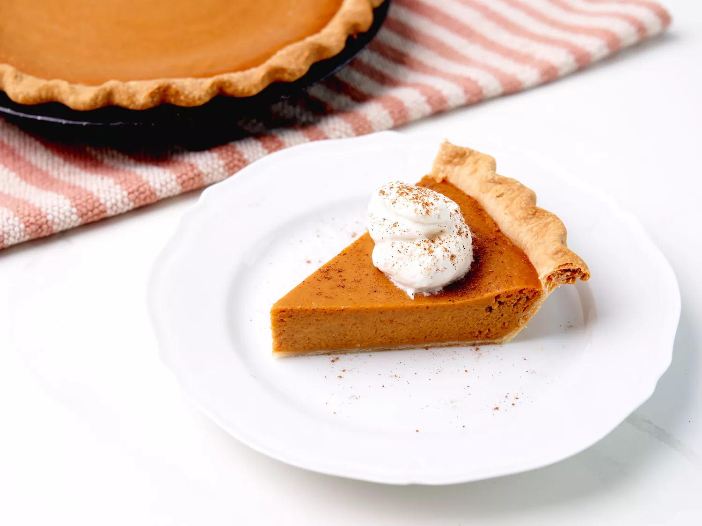

Pumpkin Pie

Description
Pumpkin pie is the perfect desert to end your holiday meal. This pie will be sure to have your guest coming back every year. Not only is it delicious, it's easy to bake.
Ingredients
- 1 (15 ounce) can pumpkin puree
- 1 (14 ounce) can Eagle Brand Sweetened Condensed Milk
- 2 large eggs
- 1 tsp ground cinnamon
- 1/2 tsp ground ginger
- 1/2 tsp ground nutmeg
- 1/2 tsp salt
- 1 (9 inch) pie crust
Steps
- Gather all ingredients and preheat the oven to 425 degrees F
- Whisk pumpkin puree, condensed milk, eggs, cinnamon, ginger, nutmeg, and salt together in a medium bowl until smooth
- Pour into crust
- Bake for 15 minutes
- Reduce temperature to 350 degrees F until a knife inserted 1 inch from the crust comes out clean (35 to 40 minutes)
- Let cool before serving